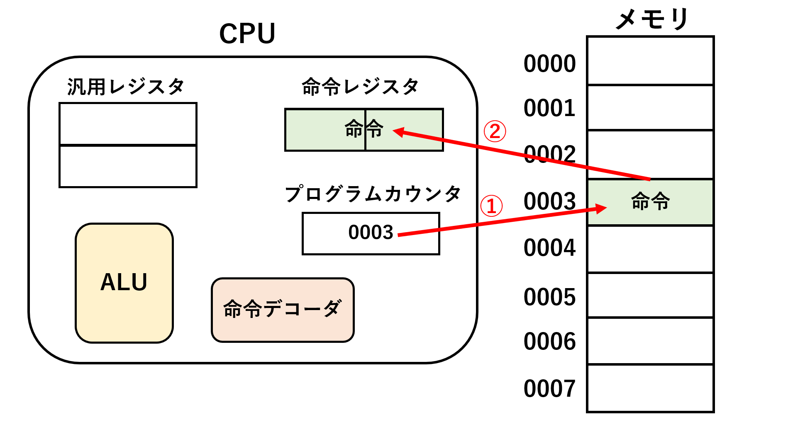

【AP対策】CPUの命令実行手順について
はじめに
CPUが命令を実行する際、フェッチ、デコード、オペランド読み出し、命令実行の
4つのプロセスを踏んで実行します。今回はこの4つのプロセスを詳しく見ていきます。
さしあたって、CPUの内部にあるレジスタなどの用語をおさらいしていきます。
プログラムカウンタ
次に実行する命令が入っているメモリアドレスが格納されている。
命令レジスタ
メモリから取り出した命令をCPU内に一時的に保存するもの。
命令デコーダ
命令を解読して必要な機器に信号を飛ばす装置
ALU
実際の演算を行う装置
汎用レジスタ
特に機能が限定されていないレジスタ。ここでは演算に必要な数値や演算結果を格納するのに使用する。
STEP1 フェッチ
CPUが命令を実行する際、はじめにメモリから命令を取り出す作業を行う。 この作業のことをフェッチと言います。上の図はフェッチの様子を表したものである。 はじめにプログラムカウンタを参照して、対応するメモリのアドレスから命令を取り出します。 その後、命令レジスタに一時保存します。
STEP2 デコード
命令は「命令部」と「オペランド部」に分かれている。命令部は実行させたい命令の種類を示す
コード番号が、オペランド部には処理に必要なデータを格納しているメモリアドレスが格納されている。
デコードでは命令レジスタから命令部を取り出して、命令デコーダに送ります。
命令デコーダでは命令部のコードを解読して、ALUなど装置に信号を送る働きがあります。
STEP3 オペランド部の取り出し
命令レジスタの中に入っている命令のオペランド部には処理に必要なデータが直接入っていたり、 データが格納されているメモリアドレスなどが格納されている。これを参照してデータを取り出し、 汎用レジスタに格納される。
STEP4 命令実行
最後に汎用レジスタに格納されているデータを用いて、ALUなどの演算装置が処理を実行し、
結果を汎用レジスタに戻して、一連の命令実行が完了します。